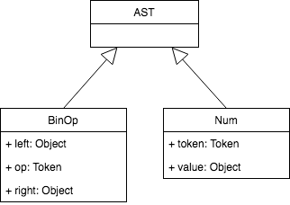
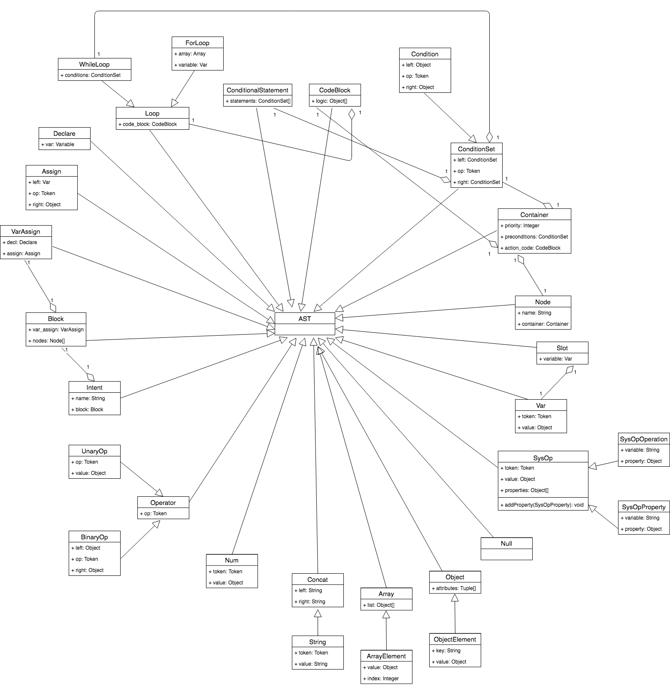

Parser
Introduction
The process of finding the structure in the stream of tokens is called parsing. The part of the interpreter that does this job is called a parser.
In order to analyse complex Cuneiform programming language constructs, an intermediate representation (IR) needs to be built. The parser is responsible for building this IR, and the interpreter will use it to interpret the input as represented by the IR. Cuneiform uses a tree data structure for an IR.
Before discussing the implementation of the IR of a program written using Cuneiform, we must first discuss the Cuneiform syntax.
In order to define syntax used in programming languages, syntax diagrams are utilized. A syntax diagram is a graphical representation of a programming language's syntax rules. Syntax diagrams serve two main purposes:
- Graphically representing the specification (grammar) of a programming language.
- Designing the parser - the diagram can be mapped to code by following simple rules.
Another approach to the representation of a programming language's syntax rules is grammars. Unlike syntax diagrams, grammars are a textual representation of a programming language's syntax. Reasons to use grammars include:
- Specifies the syntax of a programming language in a concise manner.
- Can serve as documentation.
- Good starting point when writing a parser from scratch.
- Availability of tools called parser generators which accept grammar as an input, and automatically generate a parser based on the provided grammar.
In this project, the rules were initially designed using syntax diagrams. Thereafter, grammars were used for documentation purposes. The documentation in the parser using grammars can be seen in parser.py.
Associativity and Precedence of Operators
Similar to ordinary arithmetic, in Cuneiform, addition, subtraction, multiplication, and division are left associative. When an operand like 5 is in the expression 3 + 5 + 7, it has a plus sign on both sides. We need a convention do decide which operator applies to 5. The operator + associates to the left because an operand that has plus sides on both sides belong to the operator and to its left. Therefore, we say that the operator + is left associative.
We need another convention to resolve the ambiguity when we have different kinds of operators in the same expression. This convention should resolve the relative precedence of operators.
If we say that the operator * takes its operands before + does, then it has higher precedence. In the arithmetic that we know and use, multiplication and division has higher precedence than addition and subtraction. Therefore, the expression 3 + 5 * 7 is equivalent to 3 + (5 * 7). Shown below is our precedence table.
| Precedence Level | Associativity | Operators |
| 2 | left | +, - |
| 1 | left | *, / |
From the table above, we can see that * and / have higher precedence than + and -, from their precedence levels. Below are two rules for how to syntax diagrams from the precedence tables.
- For each level of precedence, define a syntax diagram. Within the sequence diagram should contain arithmetic operators from that precedence level, and reference to syntax diagrams for the next higher level of precedence.
- Create an additional syntax diagram factor for basic units of expression, in our case, integers. The general rule is if you have N levels of precedence, you will need N + 1 syntax diagrams in total.
According to Rule 1, we have defined two syntax diagrams: a diagram called expr for level 2, and a diagram called term for level 1. By following rule 2, we will define a factor non-terminal for basic units of arithmetic expressions, and integers.
Each rectangular box in the diagram is a "function call" to another diagram. If we take the expression 3 + 5 * 7 and start with the top diagram expr and walk our way down to the bottommost diagram factor, we see that higher precedence operators execute first.
Evaluating parenthesized expressions
The interpreter should be able to evaluate parenthesized expressions with arbitrary deep nesting, like expressions such as 7 + 3 * (10 / (12 / (3 + 1) - 1)). In order to do this, the syntax should be slightly modified. The factor rule is used for basic units in expressions. The only basic unit we have now is Integer. We will add another basic unit - a parenthesized expression.
Syntax
Intent
As discussed earlier, a single Cuneiform script represents an intent. As a result, a script for an intent follows a structure as shown below.
<INTENT_NAME> {
<CODE_BLOCK>
} <CODE_BLOCK> represents the code within the intent that needs to be executed. This syntax structure is represented using syntax diagram as shown below.
- LCB, and RCB represents left curly bracket, and right curly bracket tokens respectively.
- variable and block are other variations of syntax in Cuneiform, which will be discussed next.
Block
A block represents the code that is written within an intent. The code within a block follows the following structure.
<VARIABLE_ASSIGNMENTS>
<NODES><VARIABLE_ASSIGNMENTS> are assignments and declarations of global variables within the intent. <NODES> represent the set of nodes written for the intent. The syntax diagram for a block is as shown below.
Variable Assignments
Variable assignments contain assignments and declarations of global variables within the intent. Its syntax structure is as shown below.
Nodes
Nodes contain a set of nodes.
Node
A node follows the following structure.
node <NODE_NAME> {
<CONTAINER>
}The container holds the code which is to be inside a node.
Container
The code within a container has the following structure.
priority : <PRIORITY_LEVEL>;
preconditions {
<CONDITIONS>
}
action {
<CODE_BLOCK>
}
Conditions
Conditions contain a set of conditions, separated by and, or or statements. Conditions can be represented as shown below.
Condition
A single condition contains two expressions separated by any one of the following comparison operators.
| Operator | Description |
|---|---|
| == | Equal to |
| != | Not equal |
| > | Greater than |
| < | Less than |
| >= | Greater than or equal to |
| <= | Less than or equal to |
Code Block
A code block is the set of instructions written in the Cuneiform programming language, which represents an action that needs to be executed when a node is visited. A code block may contain any of the following programming functions:
- Variable assignments
- Conditional statements
- Loops
- System operations
System Operation
A system operation is a predefined system action. It can be represented using a syntax diagram as follows.

Operation
An operation is the action that is taken by a system operation. For example, a connection to a database is established by the connect operation, and a database query gets executed using a executeQuery operation. The syntax diagram representation for this is simple.
Property Assignment
Assignment of properties for system operations.
Conditional Statement
A conditional statement is used to perform different actions based on different conditions. The following conditional statements are used in Cuneiform.
- if to specify a block of code to be executed, if a specified condition is true.
- else to specify a block of code to be executed, if the same condition is false.
- elif (else if) to specify a new condition to test, if the first condition is false.
if (condition1) {
// block of code to be executed if the condition is true
} elif (condition2) {
// block of code to be executed if condition1 is false, and condition2 is true
} else {
// block of code to be executed if both condition1 and condition2 are false
}
Conditional statements are written as shown above. This is can be represented using a syntax diagram as shown below.
Loop
There are two types of loops in Cuneiform.
Their syntax can be represented as follows:
Assignment
An assignment assigns a value to a variable. This is represented as follows.
Concat
This diagram is a representation of string concatenation.
Slot
Getting a the value of a slot.
Variable
Array
Object
Null
Additional changes to Factor
The syntax for factor is modified further to support syntax for unary operators (eg: -3, +7), real numbers, variables, and strings.
Grammar
The grammar for the Cuneiform syntax is as follows.
intent : variable LCB block RCB
block : variable_assignments nodes
variable_assignments :((assignment | declaration) SEMI)*
| empty
nodes : (node)*
node : NODE variable LCB container RCB
container : PRIORITY COL expr SEMI PRECONDITIONS LCB conditions RCB ACTION LCB code_block RCB
conditions : condition ((AND | OR) condition)*
condition : ((expr | variable | string | null | slot) (EQUAL | NEQUAL | LESS | GREATER | LEQUAL | GEQUAL)
(expr | variable | string| null | slot))
| (LPAREN conditions RPAREN)
code_block : (variable_assignments | conditional_statement | loop | system_operation)*
system_operation : ((variable DOT (property_assignment | operation)) | operation) SEMI
operation : ID
property_assignment : variable ASSIGN (object | array | expr | variable | string | slot | null)
conditional_statement : IF LPAREN conditions RPAREN LCB code_block RCB
| (ELIF LPAREN conditions RPAREN LCB code_block RCB)*
| ELSE LCB code_block RCB
loop : (WHILE LPAREN conditions RPAREN LCB code_block RCB)
| (FOR variable IN variable LCB code_block RCB)
declaration : VAR variable ((ASSIGN (object | array | string | null | variable | slot | expr) | NEW system_operation) | empty
assignment : variable ASSIGN ((object | array | expr | null | variable | slot | string) | NEW system_operation)
concat: string (PLUS (string | variable))*
slot: SLOT DOT variable
variable : (ID | SYSOP)
array : LSQB ((string | expr | variable | object | array ) COMMA )* RSQB
object : LCB variable COL ((string | expr | variable | object | array) COMMA)* RCB
null : NULL
expr : term ((PLUS | MINUS) term)*
term : factor ((MUL | INTEGER_DIV | FLOAT_DIV) factor)*
factor : PLUS factor
| MINUS factor
| INTEGER_CONST
| REAL_CONST
| LPAREN expr RPAREN
| variable
| string
Intermediate Representation
Another responsibility of the parser is building an intermediate representation, which will be used by the interpreter. The representation used by Cuneiform is called an abstract syntax tree (AST).
Parse Trees
Parse trees are another form of representation. We will compare them with ASTs to see why ASTs are better suited for intermediate representation than parse trees. A parse tree is a tree data structure that represents the syntactic structure of the language construct according to the given grammar definition. It shows how a parser has recognized the language construct. Let's take a look at a parse tree for the expression 2 * 7 + 3.
From the above diagram, we can see that:
- The parse tree records a sequence of rules the parser applies to recognize the input.
- The root of the parse tree is labelled with the grammar start symbol.
- Each interior node represents a non-terminal. That is, it represents a grammar rule application, like expr, term, or factor in our case.
- Each leaf node represents a token.
Abstract Syntax Trees
An Abstract Syntax Tree (AST) is a tree that represents the abstract syntactic structure of a language construct where each interior node and the root node represents an operator, and the children of the node represent the operands of that operator.
This is the representation used throughout Cuneiform. Shown below are both the AST and parse tree representation for the expression 2 * 7 + 3
As shown from the diagram above, the AST captures the essence of the script, while being similar. Here are the main differences between ASTs and Parse Trees.
- ASTs uses operators/operations as root and interior nodes and it uses operands as their children.
- ASTs do not use interior nodes to represent a grammar rule, unlike the parse tree does.
- ASTs don’t represent every detail from the real syntax (that’s why they’re called abstract) - no rule nodes and no parentheses, for example.
- ASTs are dense compared to a parse tree for the same language construct.
In order to encode operator precedence in AST, that is to represent that "X occurs before Y", X needs to be put lower in the tree than Y.
As we can see, ASTs are much more compact than parse trees, but still captures the essence of the program. As a result, it has been decided to use ASTs.
Implementation of AST
A program is written to implement different AST node types, and the parser is modified to generate an AST composed of those nodes.
First, a basic node class called AST is created. Other classes will inherit from this.
Consider the operator-operand model. Cuneiform supports four operators, and integer, and real number operands. The operators are addition, subtraction, multiplication, and division. A BinOp class has been implemented to represent all four binary operators (a binary operator is an operator that operates on two operands).
The attributes of the binary operator are left, op, and right, where left and right point to the node of the left operand, and right operand respectively. Op holds a token for the operator: Token(PLUS, ‘+’) for the plus operator, Token(MINUS, ‘-‘) for the minus operator, and so on.
To represent numbers in our AST, a class called Num is defined, which will hold a token for the number type (integer, or real), and the number itself.
Shown below is how an AST will look with the new node classes defined.
In order to navigate an AST to properly evaluate the expression represented by that tree, a postorder traversal must be performed. This is a special case of depth-first traversal which starts at the root node and recursively visits the children of each node from left to the right. The postorder traversal visits nodes as far away from the root as fast as it can. This is performed in the interpreter. Shown below is a representation of all the nodes implemented in Cuneiform.
What's next?
The next section discusses implementation details of the interpreter.